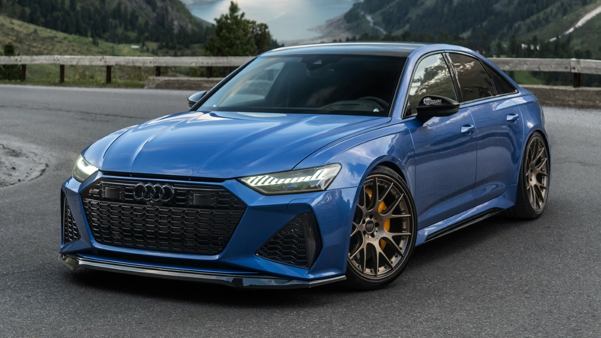

Vehicles are essential in today’s world, serving as the primary means of transportation for people and goods. They come in various shapes, sizes, and functionalities, each designed to meet specific needs. Here's a deep dive into the most common types of vehicles
Cars
Cars are the most common type of vehicle. They are designed for personal transport, typically seating four to five people. Cars vary in size, fuel type, and features, and they can be categorized as:
Sedans

Known for their balanced design, comfort, and space, sedans have four doors and a separate trunk. They are great for family use and long-distance travel.
SUVs (Sport Utility Vehicles)
Larger and more versatile, SUVs can handle off-road conditions while offering spacious interiors. Many SUVs also offer all-wheel or four-wheel drive for added traction.
Hatchbacks
These cars feature a rear door that swings upwards, offering more storage flexibility. Hatchbacks tend to be more compact than sedans, making them ideal for city driving.
Bicycles
Bicycles are human-powered vehicles with two wheels. They offer an environmentally friendly, cost-effective, and healthy means of transport.
Road Bikes
These are designed for speed and efficiency on paved roads. They have thin tires and lightweight frames, making them ideal for commuting or racing.
Mountain Bikes
Built for rough terrain, mountain bikes have thicker tires and more robust suspensions for shock absorption on uneven surfaces.
Electric Bikes
Also known as e-bikes, these are equipped with a small electric motor to assist the rider, making it easier to tackle hills or long distances.